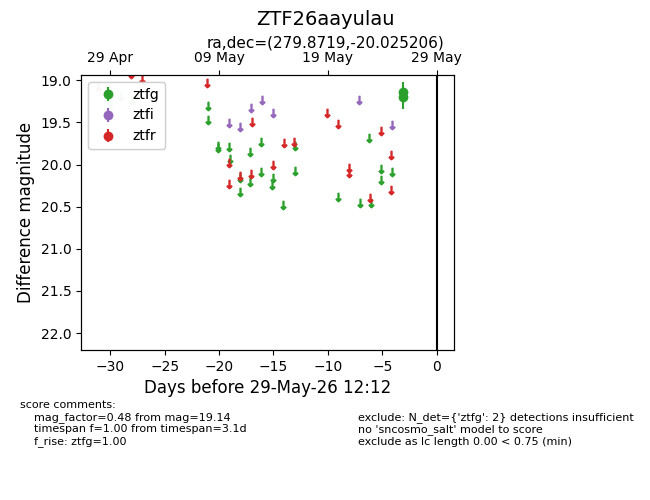
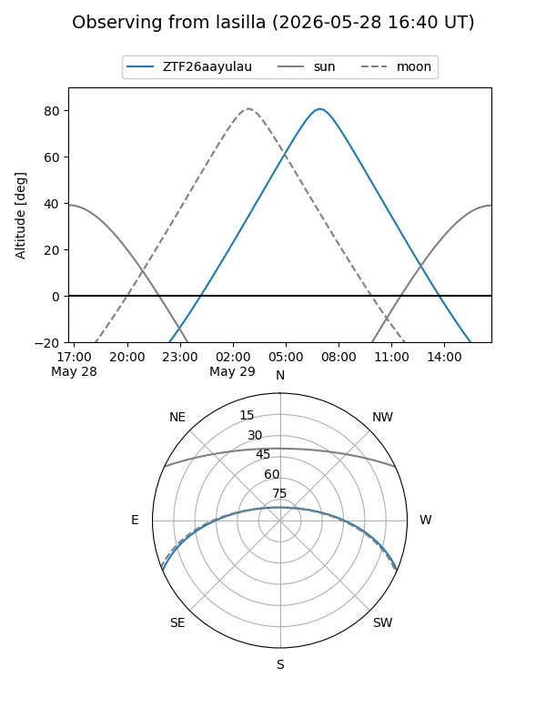
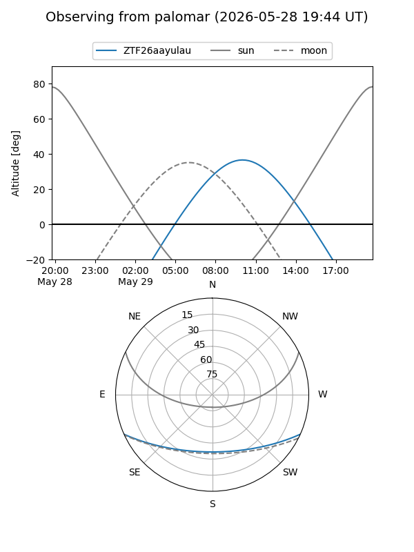

ZTF26aayulau
Target ZTF26aayulau at 2026-05-29 12:16
Aliases and brokers:
lsst-FINK: link
lsst-Lasair: link
lsst-ALeRCE: link
ztf-FINK: link
ztf-Lasair: link
ztf-ALeRCE: link
alt names
ZTF26aayulau (ztf,fink_ztf)
Coordinates:
equatorial (ra, dec) = 279.8719,-20.02521
equatorial (HMS+DMS) = 18:39:29.27,-20:01:30.74
galactic (l, b) = (13.7128,-6.46311)
Flags:
Photometry:
last ztfg=19.14
2 ztfg detections
Lightcurve

Visibility


Additional plots